Partnership Proposal
Doha Film Institute
×Doha Film Institute
moremuslim.org
The Show
What is More Muslim?
A narrative audio documentary series that explores the Muslim experience, with all its messiness.
Each episode is a transhistorical journey into one aspect of the Muslim experience, reported across continents, edited from Doha, and produced by the Al-Mujadilah Center and Mosque for Women.
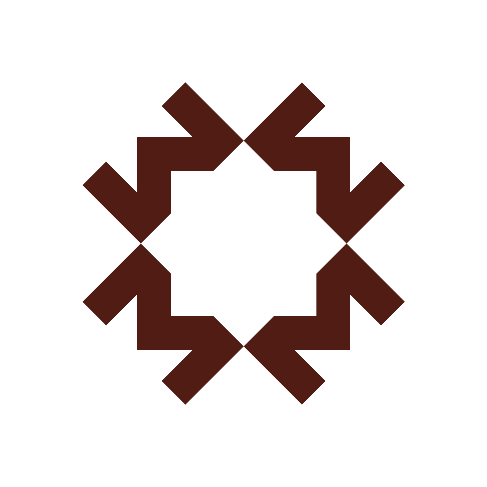
The Show
One of the first narrative documentary podcasts made in Qatar.
With the show, we are bringing the quality and calibre of storytelling that audiences have come to love from public radio programs like Radiolab, Planet Money, and This American Life to stories from Muslim communities around the world.
Editorially led from Doha, we work with reporters and correspondents across multiple continents, already competing in the same category as the most accomplished narrative audio programs in the world.
The Form
Narrative audio documentary is, in its methods and ambitions, a branch of the documentary tradition.
The tools are the same as documentary film: field recording, archival material, narrative architecture, score, sound design, months of editorial refinement. What differs is the medium, and the specific kind of attention it asks of its audience.
The critical establishment has recognised this. The Peabody Awards, the duPont-Columbia Journalism Award, and the Prix Italia treat radio documentary, podcast, and documentary film on equal terms. Audio documentary is not a lesser form. It is a different kind of cinema, and some of the most ambitious examples of it are being made right now.
Why Now
Film festivals are expanding their understanding of what documentary storytelling means.
01
Tribeca Festival has extended its programming to include audio storytelling alongside film, recognising that the critical conversation around documentary cinema and documentary audio now substantially overlaps, and that the audiences are largely the same.
02
The Peabody Awards have always treated radio documentary and film documentary as equals. In recent years, the podcast and audio categories have grown to rival the broadcast and film lists in the prestige of their selections and the critical attention they attract.
03
At the most ambitious documentary institutions, the relevant question is no longer what medium a work was made in. It is whether the work meets the editorial standard. More Muslim does. DFI is positioned to be the institution that says so first in this region.
Episode 06
Cape Malay
Growing up, Aina had heard about the transatlantic slave trade. But on a reporting trip she was shocked to learn that Dutch colonisers were also deporting and enslaving Muslims from Indonesia, shipping them thousands of miles to South Africa. Reporter Aina J. Khan takes us to Cape Town and tells the story of what they built there.
How the Cape Malay used their faith to survive 400 years of slavery, colonialism, and apartheid. And why gentrification may be what finally breaks them.
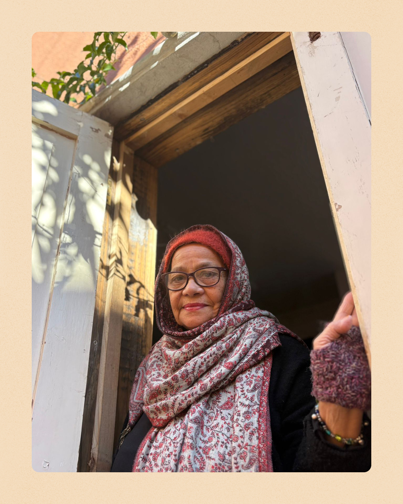
Who's Listening
The curious, mobile, globally-minded listener.
More Muslim's audience skews 22 to 45, university-educated, urban and culturally engaged. The same person who reads long-form journalism, travels often, and chooses Radiolab over the algorithm. They listen on the move: commuting, in transit, in the air.
It is a young, international, predominantly female audience that crosses cultures rather than staying inside one. Reached across 143 countries in the first three months.
"The same person who attends a documentary festival and follows the most ambitious work in any medium."
By the Numbers
In its first three months, the show found a global, premium audience primarily through word of mouth.
The Team
Host
Dr. Sohaira Siddiqui
Executive Director, Al-Mujadilah; Professor of Islamic Studies, Georgetown. Named one of the 500 Most Influential Muslims, 2026.
Executive Producer & Managing Editor
Salman Ahad Khan
The Experiment (The Atlantic / WNYC), Reveal, Revisionist History, More Perfect. Gold for Best Documentary, Signal Awards 2024.
Consulting Editor
Sarah Qari
Radiolab, More Perfect, On the Media. Lead producer on The Other Latif, a duPont-Columbia winner.
Technical Director
Alexander Overington
Radiolab, The Daily (NYT), More Perfect. Webby Award for Best Sound Design.
Producer
Taqwa Sadiq
BBC Radio 4 and BBC Sounds. Best New Producer, Audio Production Awards 2024.
Producer
Tanita Rahmani
Campside Media, Snap Judgment. Shortlisted for Best Short Documentary at IDFA.
Fact Checker
Heba Elorbany
Former Executive Producer of Audio, Los Angeles Times. Tribeca-premiered documentary filmmaker.
Where the Team Has Worked
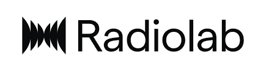
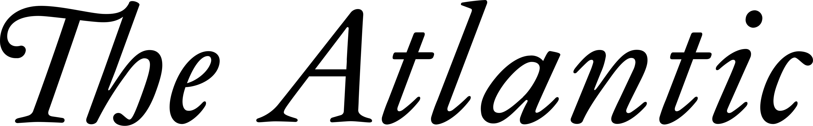

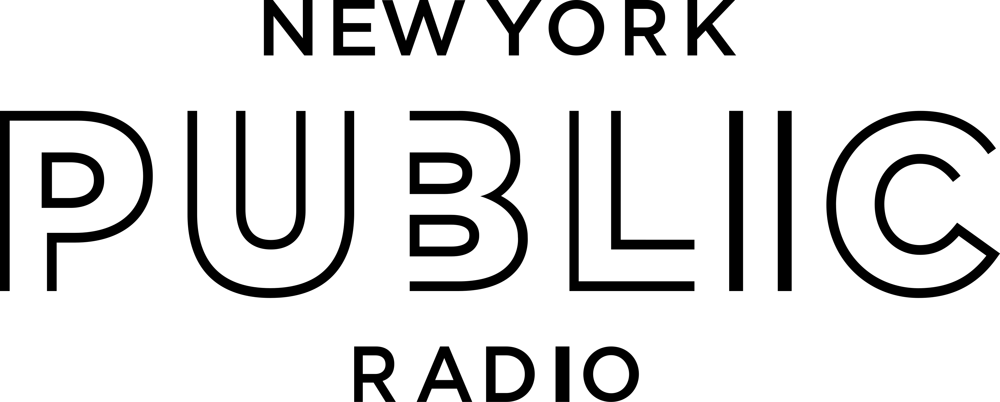
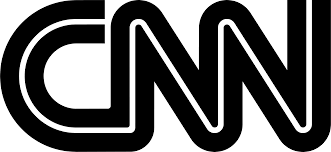
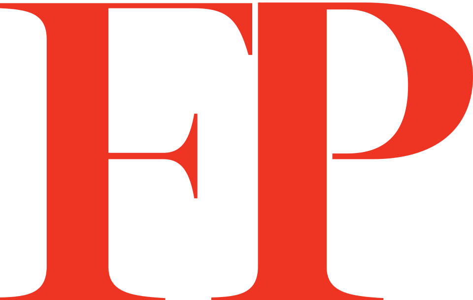
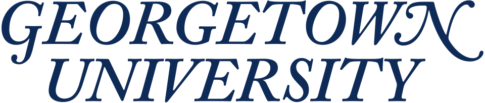
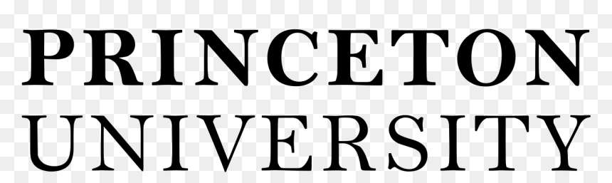
Honoured
What They're Saying
"More Muslim is, first and foremost, a masterpiece of audio as a distinct form."
Kasurian
"There's a kind of story I go back to again and again: a producer picks up a mic and wills something into existence. That's Salman."
Rob Rosenthal · Transom Sound School
"It represents the peak of what audio as a form can be, for anyone interested in tightly told stories that leave you with an expanded sense of the world."
Kasurian
"More Muslim is unlike anything else in my podcast feed. It's cinematic, deeply reported, and beautifully produced. The kind of storytelling that makes you feel seen."
Audience Review · Apple Podcasts
Featured in
The Fit
DFI's mandate and More Muslim's editorial identity are pointed at the same horizon.
01
A Qatar original. More Muslim originates in Qatar, editorially led from Doha by Al-Mujadilah. It is not a licensed international property. It has drawn sustained international attention to storytelling made in this city, and it continues to do so.
02
The stories DFI was built to support. DFI's mandate is to develop storytelling from the Arab world. More Muslim reports from inside Muslim and Arab communities in a way no institution without roots here can replicate. These stories could not be made anywhere else.
03
The same audience. The person who follows More Muslim is the same person who attends Ajyal, follows Qumra's selections, and treats cultural work as a way of understanding the world rather than merely being entertained by it.
Ways to Partner
01
Ajyal Film Festival
Programme More Muslim as the first audio documentary at Ajyal: a curated Season One listening event followed by a conversation with the production team.
02
Qumra Showcase
A session at Qumra on narrative audio documentary as an emerging form for Arab storytellers, including a listening session and open conversation with the team.
03
DFI Development Grant
Season Two production funding through the DFI grant programme, with DFI institutional credit on all Season Two materials and press.
04
Doha Film Experience
A masterclass in narrative audio documentary within the Doha Film Experience curriculum, taught by executive producer Salman Ahad Khan and technical director Alexander Overington.
05
Co-Production Credit
DFI co-production support for Season Two in exchange for founding institutional credit, making More Muslim the first audio documentary to carry the DFI name.
06
Audio Storytelling Initiative
A new DFI grant programme for audio documentary in Qatar and the Arab world, with More Muslim as the founding project and proof of what the form can achieve.
In partnership with
Doha Film Institute
Salman Ahad Khan
Executive Producer & Managing Editor
salman@moremuslim.org